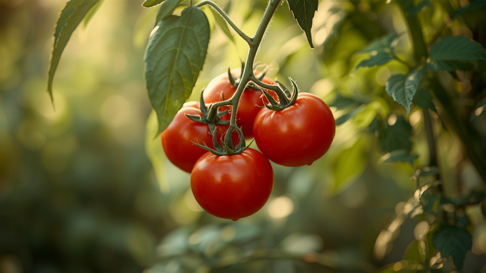

Tomaten gehen trotz richtiger Pflege ein – die 6 häufigsten Ursachen
Du hast gegossen. Gedüngt. Den Standort geprüft. Und trotzdem hängen die Blätter, die Früchte faulen oder die Pflanze gibt einfach auf.
Das ist kein Pech. Für jedes Symptom gibt es eine konkrete, identifizierbare Ursache. Dieser Artikel ordnet die sechs häufigsten Fälle den Symptomen zu – damit du in fünf Minuten weißt, woran du bist.
1. Braunfäule (Phytophthora infestans)
Symptom: Braune, sich ausbreitende Flecken auf Blättern und Früchten, oft nach feuchtwarmen Tagen. Die Flecken wachsen schnell – innerhalb von 24 bis 48 Stunden kann eine ganze Pflanze betroffen sein.
Ursache: Ein Pilz, der sich über Spritzwasser und feuchte Luft auf dem Laub verbreitet. Nicht Trockenheit tötet die Tomate – Feuchtigkeit auf den Blättern tut es.
Sofortmaßnahme: Befallene Pflanzenteile sofort entfernen, nicht kompostieren – Hausmüll. Künftig nur am Boden gießen, nicht von oben. Pflanzenabstand erhöhen, damit Luft zwischen den Pflanzen zirkuliert. Ist die Braunfäule einmal in der Pflanze, gibt es kein Zurück – Prävention ist alles.
2. Blütenendfäule
Symptom: Schwarze, lederartige, eingesunkene Stellen am unteren Ende der Frucht. Die Tomate sieht von oben gesund aus, ist es unten nicht.
Ursache: Kalziummangel – aber nicht weil zu wenig Kalk im Boden wäre. Sondern weil unregelmäßige Wasserversorgung die Kalziumaufnahme blockiert. Mal zu trocken, mal zu viel auf einmal: Die Pflanze kann den Nährstoff schlicht nicht aufnehmen.
Sofortmaßnahme: Regelmäßig und gleichmäßig gießen statt stoßweise. Mulch um die Pflanze herum hält die Bodenfeuchtigkeit stabiler. Wer Kalk ergänzt, behebt die Ursache damit meistens nicht – das Problem ist die Wasserführung.
3. Welke trotz feuchtem Boden
Symptom: Die Blätter hängen, obwohl der Boden sichtbar feucht ist. Das Gegenteil von dem, was man erwartet.
Ursache: Entweder Wurzelfäule durch Staunässe – die Wurzeln ersticken buchstäblich – oder ein Schädling direkt an der Wurzel, häufig Drahtwurm. In beiden Fällen kann die Pflanze Wasser nicht mehr transportieren, egal wie viel angeboten wird.
Sofortmaßnahme: Drainage prüfen. Beim Topf: Abflusslöcher kontrollieren. Im Beet: einen kleinen Bereich ausgraben und den Wurzelballen begutachten. Braune, matschige Wurzeln zeigen Fäule. Schädlinge an den Wurzeln sind mit bloßem Auge sichtbar.
4. Schneckenfraß über Nacht
Symptom: Am Abend noch in Ordnung, morgens angefressene Blätter und Früchte, Schleimspuren.
Ursache: Schnecken sind nachtaktiv, besonders nach Regen oder wenn man abends gegossen hat. Sie kommen nicht von weit her – sie warten tagsüber in der Nähe.
Sofortmaßnahme: Morgens statt abends gießen, damit der Boden bis Einbruch der Dunkelheit abgetrocknet ist. Schneckenkragen um einzelne Pflanzen. Bierfallen funktionieren, müssen aber täglich geleert werden. Wer Jungpflanzen nachsetzt, sollte den Boden vorher kontrollieren – eine übersehene Schnecke kann eine neue Pflanze in einer Nacht vernichten.
5. Hagel- oder Frostschaden
Symptom: Über Nacht aufgetretene mechanische Schäden – Löcher in den Blättern, schlaffe oder dunkle Triebe ohne erkennbaren Schädling.
Ursache: Wetterereignis. Kein Pflegefehler, aber fehlende Vorbereitung. Besonders Spätfröste im Mai erwischen Tomatenpflanzen, die bereits draußen stehen.
Sofortmaßnahme: Beschädigte Triebe zurückschneiden, die Pflanze nicht aufgeben. Tomaten erholen sich von mechanischen Schäden erstaunlich gut, wenn der Schaden begrenzt ist. Für die nächste Saison: Vlies oder Folie griffbereit halten, wenn der Wetterdienst Temperaturen unter vier Grad ankündigt.
6. Nährstoffmangel trotz Düngung
Symptom: Blasses, gelbliches Laub, schwaches Wachstum – obwohl regelmäßig gedüngt wird. Die Pflanze wirkt erschöpft, nicht krank.
Ursache: Ein falscher pH-Wert blockiert die Nährstoffaufnahme. Der Dünger ist im Boden, die Tomate kann ihn nicht verwerten. Tomaten brauchen einen pH zwischen 6,0 und 6,8 – zu sauer oder zu alkalisch, und die Nährstoffe bleiben unerreichbar.
Sofortmaßnahme: pH-Wert messen. Teststreifen kosten wenige Euro und liefern in zwei Minuten ein Ergebnis. Bei zu saurem Boden (unter 6,0) Kalk einarbeiten, bei zu alkalischem (über 7,0) Schwefel oder sauren Kompost. Erst dann wieder düngen.
Was die meisten Fälle gemeinsam haben
Die Probleme oben eskalieren selten über Nacht. Sie kündigen sich an – in blassen Blättern, leicht hängenden Trieben, einem kleinen Fleck auf der Frucht. Wer sein Beet einmal die Woche mit demselben Blick abläuft wie ein Techniker seine Maschine, erkennt Abweichungen früh.
Das ist kein Aufwand. Es ist Methode.
Tomaten scheitern nicht zufällig. Sie zeigen es an – meistens früh genug, wenn man die Muster kennt.
Wer das nicht jedes Mal von Hand abgleichen möchte: Der Gartenplaner erkennt anhand eines Fotos, welches der oben genannten Muster vorliegt, und schlägt die passende Sofortmaßnahme vor.
Kostenlos ausprobieren